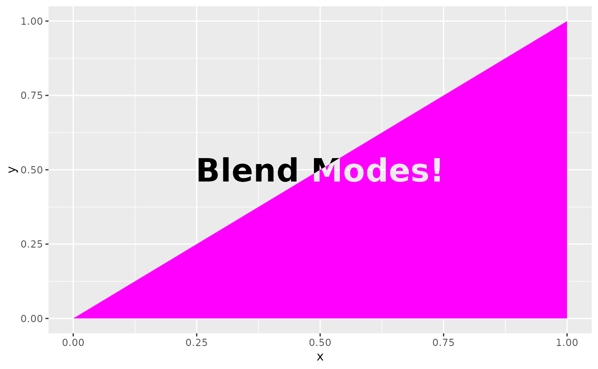

This filter blends the layer with a reference according to one of many rules as laid out in the Details section.
with_blend(
x,
bg_layer,
blend_type = "over",
flip_order = FALSE,
alpha = NA,
...
)A ggplot2 layer object, a ggplot, a grob, or a character string naming a filter
The background layer to use. Can either be a string identifying a registered filter, or a raster object. The map will be resized to match the dimensions of x.
The type of blending to perform. See Details
Should the order of the background and the overlay be
flipped so that bg_layer is treated as being on top and x being below.
For non-Duff-Porter blends the alpha channel may become modified.
This argument can be used to set the resulting alpha channel to that of the
source ("src") or destination ("dst")
Arguments to be passed on to methods. See the documentation of supported object for a description of object specific arguments.
Depending on the input, either a grob, Layer, list of Layers,
guide, or element object. Assume the output can be used in the same
context as the input.
Two images can be blended in a variety of ways as described below. In the
following source will refer to the top-most image, and destination to
the bottom-most image. Note that which is which can be controlled with the
flip_order argument.
This is a set of well-defined blend types for composing two images, taking their opacity into account:
"source": Completely disregards the destination, leaving only the source
"destination": Completely disregards the source, leaving only the
destination
"clear": Disregards both destination and source
"xor": Composes source on top of destination, setting shared areas to
transparent
"over": Composes source on top of destination
"in": Shows source, but only where the destination is opaque
"out": Shows source but only where the destination is transparent
"atop": Composes source on top of destination, keeping the transparency
of destination
"copy": Like source, but will only affect the area occupied by the source
image
These blend modes perform often complex channel operations based on the different channel values in the source and destination:
"multiply": Multiplies the channel values of source and destination
together (after scaling them to 0-1) to obtain new channel values
"screen": As multiply except that the channels are scaled to 1-0 before
multiplication, and the result is reversed again before being used
"bumpmap": Like multiple, except source is converted to greyscale first
"divide": Divide the channel values in source by the channel values in
destination
"plus": Add the channel values together including the alpha channel
"minus": Subtracts the destination channels from the source channels
"modulus_plus": As plus, but overflow will wrap around instead of being
capped
"modulus_minus": As minus but overflow (underflow) will wrap around
instead of being capped
"difference": Takes the absolute difference in channel values between
source and destination
"exclusion": source + destination - 2*source*destination. A sort of
averaged difference
"lighten": Will pick the lightest pixel at each pixel
"darken": Will pick the darkest pixel at each pixel
"lighten_intensity": Will pick the most intense colour at each pixel
"darken_intensity": Will pick the least intense colour at each pixel
These blend modes are designed to provide different lighting effects:
"overlay": Simultaneously multiplies and screens at the same time based
on the colour values of the destination. Will colorize midtones in the
destination with the source
"hard_light": The inverse of overlay (i.e. the source acts as the
destination and vice versa)
"soft_light": Like overlay but will extent the range of colorization past
the midtones
"pegtop_light": Like soft-light, but without any discontinuity in the
blend
"linear_light": Combines dodging and burning so that the destination will
be dodged (lightened) when the source is light and burned (darkened) when
the source is dark
"vivid_light": A refinement of linear-light that better avoids shading
intense colours
"pin_light": Preserves midtones of the destination and only shades
lighter and darker parts, resulting in harsh, contrasty lightning.
"linear_dodge": Lighten the destination if the source is light
"linear_burn": Darked the destination if the source is dark
"color_dodge": Like linear-dodge, but preserves blacks in the destination
image
"color_burn": Like linear-burn but preserve whites in the destination
image
These blend modes copies a single channel from the source to the destination
"copy_opacity": Will set the opacity of destination to the grayscale
version of source. To copy the opacity of source into destination use
blend_type = "in" with flip_order = TRUE.
"copy_red": Copies the red channel in source into the red channel in
destination
"copy_green": Copies the green channel in source into the green channel in
destination
"copy_blue": Copies the blue channel in source into the blue channel in
destination
"hue": Replaces the hue of the destination with the hue of the source
"saturate": Replaces the saturation of the destination with the
saturation of the source
"luminize": Replaces the luminance of the destination with the luminance
of the source
"colorize": Combines hue and saturate
"unique": Only keep pixels in the source that differ from the
destination.
The above is obviously a very quick overview. More information can be found in https://legacy.imagemagick.org/Usage/compose/
Other blend filters:
with_blend_custom(),
with_interpolate(),
with_mask()
library(ggplot2)
ggplot() +
as_reference(
geom_text(aes(0.5, 0.5, label = 'Blend Modes!'), size = 10, fontface = 'bold'),
id = "text"
) +
with_blend(
geom_polygon(aes(c(0, 1, 1), c(0, 0, 1)), colour = NA, fill = 'magenta'),
bg_layer = "text",
blend_type = 'xor'
)
